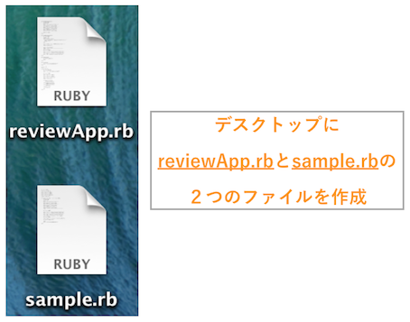

- 終了まであと10日
 大宅 誠人
大宅 誠人
大宅 誠人本章と次章では、実際に簡易なアプリケーションを作ります。その中で必要となった新しい知識を同時に学んでいきましょう。
Rubyの実行方法、基礎文法を学習したので、実際に簡単なアプリケーションを作り上げてみましょう。
まだターミナル上でしかRubyを実行できないので、ウェブアプリケーションほどの派手なものは作ることはができません。しかし機能だけなら、Rubyで十分実装が可能です。
今回は、Rubyでレビュー管理アプリケーションを作ってみましょう。
まずは今回作成するレビュー管理アプリケーションとはどのようなものなのかイメージを掴みましょう。
レビュー管理アプリケーションで出来ることは以下の3つです。
まず、レビュー管理アプリケーションをターミナルで実行すると以下のメニュー画面がでてきます。
メニュー画面
1 2 3 4 5 |
$ ruby reviewApp.rb # rubyの実行
レビュー数：0
[0]レビューを書く
[1]レビューを読む
[2]アプリを終了する
|
レビューとは、映画や音楽の感想です。
例えば、「映画」「時をかける少女」を見て、「とても面白かった！高校に戻りたくなる！」という感想を持ったとします。
するとこのアプリケーションではメニューから[0]を選んで、以下の画面でレビューを書くことができます。
0を入力
1 2 3 4 5 |
レビュー数：0
[0]レビューを書く
[1]レビューを読む
[2]アプリを終了する
0
|
レビュー入力画面
1 2 3 4 5 6 |
ジャンルを入力してください：
映画
タイトルを入力してください：
時をかける少女
感想を入力してください：
とても面白かった！高校に戻りたくなる！
|
書いたレビューはもちろん読みたくなりますよね。メニューから[1]を入力するといままで書いたレビューがリストで表示されます。
1を入力
1 2 3 4 5 |
レビュー数：1
[0]レビューを書く
[1]レビューを読む
[2]アプリを終了する
1
|
レビューのリスト表示
1 2 3 4 5 6 7 |
[0]：スターウォーズのレビュー
[1]：Tommorow never knowsのレビュー
[2]：時をかける少女のレビュー
[3]：東京グールのレビュー
見たいレビューの番号を入力してください：
|
そのリストの中から読みたいレビューの番号を指定することでレビューが読めます。
2を入力
1 2 3 4 5 6 7 |
[0]：スターウォーズのレビュー
[1]：Tommorow never knowsのレビュー
[2]：時をかける少女のレビュー
[3]：東京グールのレビュー
見たいレビューの番号を入力してください：
2
|
レビューを読む画面
1 2 3 4 5 6 7 |
ジャンル : 映画
---------------------------
タイトル : 時をかける少女
---------------------------
感想 :
とても面白かった！高校に戻りたくなる！
---------------------------
|
続いて、見本となるソースコードを確認し、実際に動作させてみましょう。
以下のリンクにアクセスしてください。見本のソースコードをダウンロードすることができます。
ダウンロードしたファイルは初期設定ではダウンロードフォルダに入っています。「Finder」を開いてサイドバーにあるダウンロードに移動してください。reviewApp-sample.rbというRubyファイルが入っているでしょうか。それが見本のソースコードです。
このソースコードをDesktopに移動させましょう。クリックをしつつドラッグすると、ファイルを移動することができます。その後、見本のソースコードをrubyコマンドで実行しましょう。
1 2 3 4 |
# 「cdコマンド」を使って、デスクトップに移動
$ cd ~/Desktop
# 「reviewApp-sample.rb」を実行
$ ruby reviewApp-sample.rb
|
実行できたら、「作成するアプリケーションの概要を確認しよう」の項で紹介した動作ができるか、確認してみましょう。
今回は細かく7つのSTEPに分けてこのアプリケーションを実装していきます。
STEP1 : レビューを表示させてみよう
STEP2 : レビューを書けるようにしよう
STEP3 : ハッシュを使って情報を整理しよう
STEP4 : メニュー画面をつくろう
STEP5 : レビューを書いた後メニューに戻るようにしよう
STEP6 : レビューを複数書けるようにしよう
STEP7 : レビューを読めるようにしよう
このアプリケーションが完成したときにはRubyの基本は押さえたといってもいいでしょう。さらに複雑なアプリケーションを開発できるようになっているはずです。
アプリケーションを開発する前の準備としてプログラムを書くためのファイルを作成します。
今回は全STEPを通して1つのアプリケーションを作成していきます。
よってアプリケーション用のRubyファイルを作成し、適宜そのファイルを編集をしていきましょう。名前はreviewApp.rbにします。
デスクトップにレビュー管理アプリケーション用のRubyファイル「reviewApp.rb」を作成してください。
このファイルを編集、追記しながら各STEPを進めていきましょう。
また、今回はアプリケーション以外にも文法の学習などでサンプルのコードを書いてもらうことがあります。そうしたときにアプリケーション用のファイルreviewApp.rbには書きたくないので別のRubyファイルを用意します。名前はsample.rbにしましょう。
デスクトップにサンプルソースコード用のRubyファイル「sample.rb」を作成してください。

レビュー管理アプリケーションの実装、つまりreviewApp.rbに作業をする場合は以下のようにreviewApp.rbを指定します。
1 |
# レビュー管理アプリケーション
|
それ以外で、ソースコードを書いて実行して欲しいときには以下のようにsample.rbを指定します。
1 |
# レビュー管理アプリケーション以外のソースコード
|
sample.rbは作業ごとにすでに書いてあるソースコードをすべて消して新しく書き直してください。reviewApp.rbは編集、追記していくので途中で消してはいけません。
作業をするときはファイル名にも注目するようにしてください。実行のときもファイルを間違えないよう気をつけましょう。
では、いよいよアプリケーションの実装をはじめていきます。
最初のSTEPとして入力はせずに単に決められたレビューを表示するようにしましょう。
まずはこちらで指定したレビューを表示しましょう。
指定のレビューは以下です。
以下のようにターミナルに表示することを目指します。
1 2 3 4 5 6 7 8 9 10 11 12 13 14 15 16 17 |
$ ruby reviewApp.rb # rubyの実行
ジャンル : 映画
---------------------------
タイトル : 時をかける少女
---------------------------
感想 :
人生の最高傑作アニメ。
青春厨としてはたまらない甘酸っぱい青春ストーリー。
ちあきのイケメンさは言うまでもない。
人にお金を払ってでもみて欲しい作品。
早く見たほうがいいよ。
Time waits for no one.
---------------------------
|
では、まずは自力でソースコードを書いてみましょう。編集するファイルはreviewApp.rbです。書けたら
1 |
$ ruby reviewApp.rb
|
で実行してみましょう。また、レビューの文章はコピーして使ってもかまいません。
1 2 3 4 5 6 7 8 9 10 11 12 13 14 15 16 17 18 19 |
ジャンル : 映画
---------------------------
タイトル : 時をかける少女
---------------------------
感想 :
人生の最高傑作アニメ。
青春厨としてはたまらない甘酸っぱい青春ストーリー。
ちあきのイケメンさは言うまでもない。
人にお金を払ってでもみて欲しい作品。
早く見たほうがいいよ。
Time waits for no one.
---------------------------
|
解答のソースコードと同じだったでしょうか。違う方もいるかもしれないですが表示がきちんとされていれば正解です。解答のソースコードはあくまで模範解答です。
しかし解答のソースコード(模範解答1)を見るとputsが大量で、あまり綺麗ではなく、分かりづらいです。
ここで改善できそうな点は2つです。
ひとつずつ見ていきましょう。
まず、putsで改行を使えるようにしましょう。解答では改行を以下のコードで行っています。
1 |
puts ""
|
これでは改行していると分かりづらいですし、改行のたびにputsを書かないといけません。
しかしこのような書き方をしなくても改行を表す文字で代用することが可能です。
このような特殊な文字を記述するために使われるのがバックスラッシュ記法(またはエスケープシークエンス)です。
バックスラッシュ記法はその名前の通り、\(バックスラッシュ)から始まる文字の記法のことです。
ウィンドウズ環境ではバックスラッシュの代わりに￥記号で代用します。
日本語キーボードを使っている方は「option + ￥」でバックスラッシュを打つことが出来ます。
この記法を使うと文字列の中でただの文字ではなく改行や、タブなどを行うようになります。
代表的なバックスラッシュ記法は以下に示します。
| 記法 | 意味 |
|---|---|
| \n | 改行 |
| \t | タブ |
| \b | バックスペース |
| \\ | バックスラッシュ |
バックスラッシュ記法が適応されるのは文字を"(ダブルクォテーション)で囲んだときのみです。'(シングルクォテーション)で囲ってしまうとバックスラッシュ記法は解釈されずにただの文字として出力されてしまいます。
以下のプログラムを実行してバックスラッシュ記法の理解を深めましょう。
以下のソースコードをsample.rbに書き、実行してみましょう
1 2 3 4 5 |
puts "改行したい改行したい\n改行した"
puts "タブしたいタブしたい\tタブした"
puts '改行したい改行したい\n改行できなかった'
puts 'タブしたいタブしたい\tタブできなかった'
|
ダブルクォテーションで囲んだ文字列はちゃんとバックスラッシュ記法で書いた文字が適応されています。
しかしシングルクォテーションで囲んだ文字列の方はただの文字として出力されてしまっているのがわかりましたね。
バックスラッシュ記法を使ってソースコードを書き直してみましょう。先ほどまで
1 |
puts ""
|
と書いていた部分はすべてバックスラッシュ記法での改行\nに置き換えることができます。以下の２つのソースコードは同じ結果が出力されます。
1 2 3 |
puts "吾輩は猫である"
puts ""
puts "名前はまだない"
|
1 |
puts "吾輩は猫である\n名前はまだない"
|
このようにreviewApp.rbでputs ""と書かれていた行を\nで書き直してみましょう
次に、変数です。変数は入れ物としての役割の他にオブジェクトに名前をつけるという役割があります。
変数を定義するとその分ソースコードは長くなってしまうのですが見やすくなるので積極的に使っていくべきです。
例をみてみましょう。
1 |
puts 200 * 2 + 100 * 5
|
これは単なる計算のプログラムですが、今のままでは何を計算しているかはわかりません。しかし変数を使うことでこのプログラムに意味を与えることが出来ます。
1 2 3 4 |
orange_price = 200
apple_price = 100
puts orange_price * 2 + apple_price * 5
|
これでこのプログラムは「200円のオレンジを2個、100円のりんごを5個買ったときの合計金額を表示する」プログラムということがわかります。一度、変数に値を入れるという手間はかかりますがプログラムが非常に見やすくなります。
さらに以下のようなときにも変数はとても便利です。
1 2 3 4 5 6 7 8 |
orange_price = 200
apple_price = 100
puts orange_price * 2 + apple_price * 5
puts orange_price * 4
puts orange_price * 3 + apple_price
|
プログラム中で何度も同じ値を使っています。こういう場合は変数に入れたほうがいいです。なぜならオレンジの価格が値上がりした場合、変数に代入している部分orange_price = 200を書き換えるだけで済むからです。
1 2 3 4 5 6 7 8 |
orange_price = 220 # ここを書き換えるだけで済む
apple_price = 100
puts orange_price * 2 + apple_price * 5
puts orange_price * 4
puts orange_price * 3 + apple_price
|
reviewApp.rbも変数にできそうな部分は変数を使いましょう。ここでは
の各値をそれぞれ変数にしましょう。
| 値 | 変数名 |
|---|---|
| ジャンル | genre |
| タイトル | title |
| 感想 | review |
文字列の連結には今は+(プラス)を使っています。しかし、文字同士の連結はRubyの式展開を使えばより綺麗に書けます。
式展開は文字列の中に式を入れることができる機能です。
Rubyにおける「式」とは文字列や数値の他に、変数やメソッド呼び出し、演算子式などが含まれます。
すなわち"文字列", 1000, (1 + 5)などはすべて式になります。
Rubyの2章でも学習しましたがここでもう一度おさらいしましょう。文字列の中で式を使い、式によって得られる値を入れることのできる機能です。式展開の書き方は文字列中で#{式}とするだけです。
1 |
"#{式}"
|
式展開をする場合は文字列を作るときに"(ダブルクォテーション)で囲む必要があります。'(シングルクォテーション)で囲んだ場合は式展開が行われません。
以下のソースコードをsample.rbに書き、実行してみましょう
1 2 3 4 5 6 7 8 |
name = "佐藤"
puts "わたしの名前は#{name}です。"
puts "1と3を足した値は#{(1 + 3)}です"
# シングルクォテーション
puts 'わたしの名前は#{name}です。'
puts '1と3を足した値は#{(1 + 3)}です'
|
式展開によって、ダブルクォテーションで囲んだ3行目と4行目は「わたしの名前は佐藤です」、「1と3を足した値は4です」となりましたね。また、'(シングルクォテーション)で囲んだ場合は式展開されないことがわかったと思います。
ダブルクォテーションで囲んだ場合
1 2 |
わたしの名前は佐藤です
1と3を足した値は4です
|
シングルクォテーションで囲んだ場合
1 2 |
わたしの名前は#{name}です
1と3を足した値は#{(1 + 3)}です
|
では、reviewApp.rbのソースコードで文字列の結合を行っている部分を+から式展開に変更してみましょう。
これでSTEP1は終了です。ここまでのreviewApp.rbのソースコードをのせておきます。比較して確認してみてください。
1 2 3 4 5 6 7 8 9 10 |
# 変数の定義
genre = "映画"
title = "時をかける少女"
review = "人生の最高傑作アニメ。\n\n青春厨としてはたまらない甘酸っぱい青春ストーリー。\n\nちあきのイケメンさは言うまでもない。\n\n人にお金を払ってでもみて欲しい作品。\n\n早く見たほうがいいよ。\nTime waits for no one."
line = "---------------------------"
# レビューの描画
puts "ジャンル : #{genre}\n#{line}"
puts "タイトル : #{title}\n#{line}"
puts "感想 :\n#{review}\n#{line}"
|
ここで処理の流れをおさらいします。
2 3 4 5 |
genre = "映画"
title = "時をかける少女"
review = "人生の最高傑作アニメ。\n\n青春厨としてはたまらない甘酸っぱい青春ストーリー。\n\nちあきのイケメンさは言うまでもない。\n\n人にお金を払ってでもみて欲しい作品。\n\n早く見たほうがいいよ。\nTime waits for no one."
line = "---------------------------"
|
2行目から5行目ではレビューに必要な情報を変数に代入しています。区切り線も繰り返し同じ文字を使うので変数に入れておきます。
8 9 10 |
puts "ジャンル : #{genre}\n#{line}"
puts "タイトル : #{title}\n#{line}"
puts "感想 :\n#{review}\n#{line}"
|
putsメソッドを使ってレビューをターミナルで表示させます。このとき式展開を使って、文字列のなかで先ほど2行目から5行目で生成した変数を使用します。
このようなソースコードが書けたらSTEP2へ進みましょう。
STEP1ではレビューはあらかじめ決められたものを使用しました。
次は実際に自分でレビューを入力してそのレビューを表示させるようにしましょう。
実装するレビューの入力画面は以下のような画面です。
いままではターミナルに文字を出力できるようにするだけで、こちらからターミナルに入力することはできませんでした。
ターミナルから文字を入力できるようにするにはgetsメソッドを使います。
getsメソッドはユーザーからターミナルへ入力できるようにするメソッドです。ユーザーが入力した値を文字列オブジェクトとしてプログラムに渡します。(返り値はユーザーが入力した値の文字列オブジェクト)
getsメソッドが呼ばれるとターミナル画面は入力待ちの状態になります。
そこでキーボードから値を入力してエンターを押すと、getsメソッドは入力した文字をプログラムに返します。
以下のソースコードをsample.rbに書き、実行してみましょう
1 2 3 |
input = gets
puts "入力した値は#{input}です"
|
打ち込んだ文字が出力されたあと、「入力した値は"打ち込んだ文字"です」とターミナル上に表示されたと思います。
ここで重要な点は以下の2つです。
getsメソッドはターミナルからユーザーに入力を行わせ、入力された値の文字列オブジェクトを返り値として渡します。
さきほどのsample.rbのソースコードを見るとgetsメソッドの返り値が変数inputに代入されているのがわかります。
getsメソッドの特徴として入力が完了するまでプログラムの処理を中断するというものがあります。
普通rubyのプログラムは上から下へと流れていきます。
1 2 3 |
puts 1
puts 2
puts 3
|
このプログラムを実行すれば上からputsメソッドが呼ばれ、1, 2, 3と順番にターミナルに出力されるでしょう。
1 2 3 |
puts title
title = "時をかける少女"
|
このソースコードは3行目で変数titleを定義しているのに、1行目でtitleを使おうとしているのでエラーして実行に失敗します。
このようにプログラムとは必ず上から下に順番に実行されるというルールがあります。
getsメソッドを使うとユーザーがターミナルで入力をするまでそこで一回プログラムを中断します。
よってgetsメソッドより下のソースコードは入力が終わるまでは実行されないということです。
1 2 3 |
input = gets
puts "入力した値は#{input}です" # ユーザーの入力が終わるまで実行されない
|
この特徴によって、getsからの返り値を変数に入れ、その変数をgetsメソッドより後に書かれたソースコードで使うことができるというわけです。
getsメソッドを使うと、ユーザーからの入力を変数に代入することができます。これを利用してレビューをユーザーが入力できるようにしましょう。
実際に動かしたら分かると思いますが、このままでは入力時になにも表示されないのでいま入力しているのがジャンルなのか、タイトルなのか、感想なのかわかりません。入力時には「入力してください」と表示した方がわかりやすいですね。
そこで以下のような文言を入力前に表示するようにしましょう。
1 2 |
ジャンルを入力してください：
# getsメソッドでの入力
|
1 2 |
タイトルを入力してください：
# getsメソッドでの入力
|
1 2 |
感想を入力してください：
# getsメソッドでの入力
|
さて、これでほとんどSTEP2は終わりですが、あと一点修正したい箇所があります。
getsメソッドで返ってきた文字列オブジェクトは勝手に文末で改行してしまいます。
これはgetsメソッドの仕様で入力した文字の末尾にバックスラッシュ記法の\nをつけた状態の文字列オブジェクトを返り値として返してしまうのです。
期待する表示
1 2 3 4 5 6 7 |
ジャンル : 映画
---------------------------
タイトル : 時をかける少女
---------------------------
感想 :
とても面白かった！高校に戻りたくなる！
---------------------------
|
実際の表示
1 2 3 4 5 6 7 8 9 10 |
ジャンル : 映画
---------------------------
タイトル : 時をかける少女
---------------------------
感想 :
とても面白かった！高校に戻りたくなる！
---------------------------
|
これを取り除くために文字列オブジェクトのメソッドchompを使いましょう。
chompメソッドは文字列の末尾の改行文字を取り除いた新しい文字列を返してくれるメソッドです。
以下のソースコードをsample.rbに書き、実行してみましょう
1 2 3 4 |
string = "改行します\n\n"
puts string # 改行される
puts string.chomp # 改行されない
|
chompメソッドによって改行が取り除かれているのが分かると思います。
これでSTEP2は終了です。ここまでのreviewApp.rbのソースコードをのせておきます。比較して確認してみてください。
1 2 3 4 5 6 7 8 9 10 11 12 13 |
# 変数の定義
puts "ジャンルを入力してください："
genre = gets.chomp
puts "タイトルを入力してください："
title = gets.chomp
puts "感想を入力してください："
review = gets.chomp
line = "---------------------------"
# レビューの描画
puts "ジャンル : #{genre}\n#{line}"
puts "タイトル : #{title}\n#{line}"
puts "感想 :\n#{review}\n#{line}"
|
ここで処理の流れをおさらいします。
2行目から8行目
2 3 4 5 6 7 8 |
puts "ジャンルを入力してください："
genre = gets.chomp
puts "タイトルを入力してください："
title = gets.chomp
puts "感想を入力してください："
review = gets.chomp
line = "---------------------------"
|
2行目から8行目ではgetsメソッドを使ってレビューの内容をターミナルから入力できるようにします。入力した値は変数に代入します。また、getsメソッドで入力した値は自動で文末に改行が入ってしまうのでそれを取り除くためにchompメソッドを使います。
11行目から13行目はSTEP1と同様、変数を式展開を使って表示します。
このようなソースコードが書けたらSTEP3へ進みましょう。
ハッシュという複数の情報を扱うことのできるオブジェクトをつかってレビューの情報をより分かりやすく扱いましょう。
これまでのソースコードを見てみるとジャンル、タイトル、感想をそれぞれ別の変数として扱っていました。
しかし、レビューを複数扱う場合を考えてみてください。
例えば以下の2つのレビューを同時に表示させるプログラムを書いてみましょう。
1 2 3 4 5 6 7 8 9 10 11 12 13 14 15 16 17 18 19 |
# レビュー1
genre1 = "映画"
title1 = "時をかける少女"
review1 = "人生の最高傑作アニメ。"
# レビュー2
genre2 = "マンガ"
title2 = "るろうに剣心"
review2 = "映画化されたけど、やっぱり原作が最高。"
# 区切り線
line = "---------------------------"
# レビューの描画
puts "ジャンル : #{genre1}"
puts "タイトル : #{title1}"
puts "感想 :\n#{line}\n#{review1}\n#{line}\n"
puts "ジャンル : #{genre2}"
puts "タイトル : #{title2}"
puts "感想 :\n#{line}\n#{review2}\n#{line}"
|
このようなソースコードになったと思います。同じような変数が増えていっていますね。さらにジャンル、タイトル、感想以外にも項目が増えたときにどんどん変数が多くなって見づらくなっていきそうです。
そこで出てくるのががハッシュオブジェクトです。
ハッシュオブジェクト(略称:ハッシュ)は１つの変数で複数のデータを持つことのできるオブジェクトです。
ハッシュオブジェクトは、自身の中にデータとそれに対応するキーのセットを所持することができます。
今回作成中のレビューアプリでは、ハッシュオブジェクトを利用しレビューのまとまりを作ることで、あとからレビューを読む時などの処理を簡単に記述できるようになります。最初はどうしてもメリットがわかりづらいかもしれませんが、後で必ず実感できるので、気にせずにカリキュラムを進めていきましょう。
ハッシュのように、保存したいデータ(バリュー)とそれに対応する標識(キー)を対応させてペアで保存する方式のことをキーバリューストアといいます。標識であるキーを指定すればそれに対応するデータを取り出すことが可能です。
まずはハッシュオブジェクトを生成してみましょう。ハッシュの生成は以下のコードで行えます。
1 |
hash = {}
|
ハッシュは{} (中括弧)を使って記述します。また左辺のhashは変数名であり、任意の名前を定義できます。上の書き方では何もデータを持っていない空のハッシュが生成されます。
生成のときからデータを持つこともできます。以下の書き方でキーと値を持った状態のハッシュオブジェクトを生成できます。
{キー1 => 値1, キー2 => 値2, ...}
ハッシュを生成するソースコードをsample.rbに書き、実行してみましょう
ここで、ターミナルから以下のコマンドを入力してみてください。すると、Rubyのバージョンを確かめることができます。
1 2 3 |
$ ruby -v
#Rubyのバージョンが表示される
2.0.0
|
この時、バージョンが1.9.3より古かった場合、以下のプログラムの3行目と6行目は除いてコードを実行してください。
1 2 3 4 5 6 |
hash1 = {"title" => "るろうに剣心"}
hash2 = {:title => "時をかける少女"}
hash3 = {title: "君に届け"}
puts hash1
puts hash2
puts hash3
|
1 2 |
#ディレクトリを確認し、以下のコードを実行
$ ruby sample.rb
|
hash1とhash2はどちらも「title」というキーでハッシュを生成しています。hash1はキーを文字列"title"で指定しています。一方、hash2はキーが:titleとなっていますね。これはシンボルと呼ばれるオブジェクトです。
また、hash3はhash2と同義ですが、コードの量も少なくよく使われるので覚えておきましょう。
先ほどRubyのバージョンを確かめたのは、hash3の記法はRubyのバージョン1.9.3以降からしか使えないためです。それ以前のバージョンで利用しようとすると、エラーが起きてしまいます。
シンボルオブジェクト(略称:シンボル)とは今回のハッシュのキーのような名前を識別するためのラベルです。
かならず先頭に接頭語:をつけます。基本的には文字列と同じように扱えます。
ハッシュオブジェクトのキーは文字列オブジェクト、シンボルオブジェクトのどちらを使っても問題ないです。
結論から言うとハッシュではシンボルを使いましょう。文字列とシンボルはほとんど特性は同じです。ハッシュのキーも文字列とシンボルの両方が使えます。
1 2 3 |
# どちらも同じ
hash1 = {:title => "時をかける少女"}
hash2 = {"title" => "時をかける少女"}
|
しかし、ハッシュで使う場合に実行の速度がシンボルの方が早いため、ハッシュのキーにはシンボルの使用が推奨されています。
(文字列とシンボルはほとんど特性は同じといいましたが、実は少しだけ違います。深い話になるのでここでは割愛しますが興味のある方は調べてみるとおもしろいかもしれません。)
ではハッシュの持っている値を取得してみましょう。取得の際に使うのがその値のキーです。以下の書き方で取得ができます。
1 |
ハッシュオブジェクト[欲しい値のキー]
|
生成したハッシュから値を取得する以下のソースコードをsample.rbに書き、実行してみましょう
1 2 |
hash = {:title => "時をかける少女"}
puts hash[:title]
|
キー「title」に対応する値である「時をかける少女」が表示されたでしょうか。
もちろんハッシュオブジェクトは生成後にも値を追加できます。追加には以下のような書き方をします。
1 |
ハッシュオブジェクト[キー] = 値
|
すでに値が入っているキーを指定すると値が上書きされます。
キーが「title」、それに対応する値が「時をかける少女」のハッシュオブジェクトを作り、キー「title」に対応する値を上書きして変えてみましょう。
以下のソースコードをsample.rbに書き、実行してみましょう
1 2 3 4 |
hash = {:title => "時をかける少女"}
puts hash[:title]
hash[:title] = "るろうに剣心"
puts hash[:title]
|
二回目の出力は「るろうに剣心」に上書きされていたでしょうか。
これで基本的なハッシュの使い方はわかりましたね。
以下の動画を見て、ハッシュについての知識を確認しましょう。
では、レビューの情報をハッシュにまとめてみましょう。レビューの投稿を表す変数をハッシュオブジェクトpostで生成します。
1 |
post = {} # レビューの投稿を表す変数を定義
|
そして、今まで変数としていた「genre」、「title」、「review」をそれぞれハッシュオブジェクトpostのキーとしましょう。
1 2 3 |
post[:genre] = # ジャンル
post[:title] = # タイトル
post[:review] = # 感想
|
これで今まで3つあった変数(genre,title,review)はpostの1つだけにすることができます。
例えば、具体的にハッシュの中に要素を追加してみます。
まず空のハッシュを宣言することで、後からハッシュの要素を追加出来るようになります。
1 2 3 4 5 6 7 |
post = {} # 空のハッシュの宣言
#以下で要素の追加
post[:genre] = "マンガ"
post[:title] = "るろうに剣心"
post[:review] = "面白い!"
puts post # => {:genre=>"マンガ", :title=>"るろうに剣心", :review=>"面白い"}
|
また、以下のように定義したハッシュを使うことが出来ます。
1 2 3 |
puts post[:genre] # => "マンガ"
puts post[:title] # => "るろうに剣心"
puts post[:review] # => "面白い!"
|
これでSTEP2は終了です。ここまでのreviewApp.rbのソースコードをのせておきます。比較して確認してみてください。
1 2 3 4 5 6 7 8 9 10 11 12 13 14 |
# 変数の定義
post = {}
puts "ジャンルを入力してください："
post[:genre] = gets.chomp
puts "タイトルを入力してください："
post[:title] = gets.chomp
puts "感想を入力してください："
post[:review] = gets.chomp
line = "---------------------------"
# レビューの描画
puts "ジャンル : #{post[:genre]}\n#{line}"
puts "タイトル : #{post[:title]}\n#{line}"
puts "感想 :\n#{post[:review]}\n#{line}"
|
ソースコードの行数が短くならないため、今の段階ではハッシュを使う利点があまり感じられないかもしれませんが後で複数レビューを扱うときに楽になります。
ここで処理の流れをおさらいします。
2 3 4 5 6 7 8 9 |
post = {}
puts "ジャンルを入力してください："
post[:genre] = gets.chomp
puts "タイトルを入力してください："
post[:title] = gets.chomp
puts "感想を入力してください："
post[:review] = gets.chomp
line = "---------------------------"
|
今まで複数の変数(genre, title, review)にレビューの情報を入れていましたが、今回はハッシュを使って1つの変数で複数の値を管理します。ハッシュのオブジェクトを代入するための変数postを用意します。
ハッシュはキーとバリューで値を管理します。ジャンルはgenre、タイトルはtitle、感想はreviewというキーに値を入れます。
1 |
post[:キー] = 値
|
2 3 4 |
puts "ジャンル : #{post[:genre]}\n#{line}"
puts "タイトル : #{post[:title]}\n#{line}"
puts "感想 :\n#{post[:review]}\n#{line}"
|
12行目から14行目では今までのSTEPと同様に変数を式展開を使って表示しますが、変数がハッシュなので値の取り出し方が違います。今までのように変数を式展開で囲むだけではなく、 ハッシュから値を取り出すにはキーを指定しなくてはいけません。
1 |
puts "#{post[:キー]}"
|
このようなソースコードが書けたらSTEP4へ進みましょう。
プログラムを実行してから最初に表示されるメニュー画面を表示できるようにしましょう。
1 2 3 4 |
レビュー数：0
[0]レビューを書く
[1]レビューを読む
[2]アプリを終了する
|
このアプリケーションでは最初メニュー画面が表示され、メニューの横にある番号を入力してレビューを書くか、レビューを読むか、終了するかを選びます。
まずはメニューを表示させましょう。メニューは
[0]レビューを書く
[1]レビューを読む
[2]アプリを終了する
の三項目を表示したあとユーザーの入力を待ちます。
入力後は今まで通り、レビューを書く画面を表示させましょう。
また、現在書いたレビュー数をメニューの上に表示させますが、今の段階ではレビュー数は0でかまいません。
1 2 3 4 5 6 7 8 |
レビュー数：0
[0]レビューを書く
[1]レビューを読む
[2]アプリを終了する
# 入力待ち
|
このままのプログラムでは何を入力しても「レビューを書く」になってしまいます。
次はユーザーの入力によって処理を変えるということをしないといけません。すなわち変数input(入力された文字列)によって処理を変えます。
ここで必要になるのは条件分岐です。ここでの条件はユーザーから入力された値で、分岐は以下です。
| 入力された値 | 処理 |
|---|---|
| 0 | レビューを書く |
| 1 | レビューを読む |
| 2 | プログラムを終了させる |
| それ以外 | 無効な値と教える |
条件分岐にはif文という文法をつかいます。if文は条件式が正しいか正しくないかで処理を分岐させることができます。最も基本的なif文の書き方は以下です。
1 2 3 |
if 条件式 then
# 条件式が真(true)のときに実行する処理
end
|
条件式とは基本文法で出てきた(3 > 0)などのような返り値がtrueかfalseの式のことです。
if 条件式 thenとendの間にはその条件式がtrueのときに実行する処理を書きます。
以下のソースコードをsample.rbに書き、実行してみましょう
1 2 3 4 |
value = 3
if value > 0 then
puts "値は正です"
end
|
このプログラムで条件式は「value > 0」で、valueは3なので条件式は真(true)となります。よってif 条件式 thenとendの間の処理が実行され、画面に"値は正です"と表示されました。
値が正でないとき、つまり条件式が偽(false)のときに"値は負です"と表示させたくなりますね。条件式が偽のときに処理を行うには以下のようにelseを使います。
1 2 3 4 5 |
if 条件式 then
# 条件式が真(true)のときに実行する処理
else
# 条件式が偽(false)のときに実行する処理
end
|
elseとendの間には条件式が偽のときに実行させる処理を書きます。これを使って先ほどのプログラムに書き足して値が負のときに"値は負です"と表示させるようにしましょう。
以下のソースコードをsample.rbに書き、実行してみましょう
1 2 3 4 5 6 |
value = -3
if value > 0 then
puts "値は正です"
else
puts "値は負です"
end
|
今回は値を-3にしたので条件式は偽となり、"値は負です"と表示されました。
数学に詳しい方ならお気づきかもしれませんが、実は先ほどのプログラムは数学的には間違っています。'0'は正でも負でもないためです。しかし今のプログラムで値を0にすると"値は負です"と表示されてしまいます。よって条件分岐を以下のように3パターン考えます。
| 条件 | 表示 |
|---|---|
| value > 0 | 値は正です |
| value < 0 | 値は負です |
| それ以外 | 値は0です |
このような複数の条件分岐を書くときはelsifという文法を使います。
1 2 3 4 5 6 7 8 |
if 条件式1 then
# 条件式1が真(true)のときに実行する処理
elsif 条件式2 then
# 条件式1が偽(false)のとき、かつ
# 条件式2が真(true)のときに実行する処理
else
# 条件式1と条件式2がどちらとも偽(false)のときに実行する処理
end
|
すなわち正か負か0かの条件分岐は以下のようになります。
これをソースコードに書き直しましょう。
ユーザーから入力された値が'正'、'負'、'0'のどれかを判断するようにします。getsメソッドで得られるユーザーからの入力は文字列であるため、数値オブジェクトに変換しなければいけません。
また if 条件式 thenの then は省略することができます。
文字列オブジェクトに対してto_iメソッドを使うとその文字列を数値オブジェクトに変換することができます。
1 2 3 |
string = "30" # 文字列の30
number = string.to_i # 数値の30に変換
puts number + 20 # => 50が出力
|
以下のソースコードをsample.rbに書き、実行してみましょう
1 2 3 4 5 6 7 8 9 |
value = gets.to_i
if value > 0 then
puts "値は正です"
elsif value < 0 then
puts "値は負です"
else
puts "値は0です"
end
|
以下の動画で、If文に関しての知識を確認しましょう。
これで条件分岐の使い方がわかったと思います。ではメニュー画面の実装に戻りましょう。ここでもう一度メニュー画面の条件分岐についてまとめましょう。
| 入力された値 | 処理 |
|---|---|
| 0 | レビューを書く |
| 1 | レビューを読む |
| 2 | プログラムを終了させる |
| それ以外 | 無効な値と教える |
機能的にはSTEP4は終了です。しかしソースコードも量が増えif文の中にも長い処理が書かれているためソースコードが非常に読みづらくなってしまっています。ここでメソッドを書いてソースコードを綺麗にしましょう。
読みづらいコード
8 9 10 11 12 13 14 15 16 17 18 19 20 21 22 23 24 25 26 27 28 29 |
if input == 0 then # 「レビューを書く」
# 変数の定義
post = {}
puts "ジャンルを入力してください："
post[:genre] = gets.chomp
puts "タイトルを入力してください："
post[:title] = gets.chomp
puts "感想を入力してください："
post[:review] = gets.chomp
line = "---------------------------"
# レビューの描画
puts "ジャンル : #{post[:genre]}\n#{line}"
puts "タイトル : #{post[:title]}\n#{line}"
puts "感想 :\n#{post[:review]}\n#{line}"
elsif input == 1 then # 「レビューを読む」
# レビューを読む
elsif input == 2 then # 「プログラムを終了する」
# プログラムを終了させる
else
puts "入力された値は無効な値です"
end
|
メソッドは今までにもたくさん出てきました。メソッドはあらかじめ決まったものだけでなく自分で書くこともできるのです。メソッドは以下の書式でプログラム中で定義ができます。
1 2 3 |
def メソッド名
# 実行する処理
end
|
実行するときはプログラム中でメソッド名を呼ぶだけです。
1 2 3 4 5 |
def say_hello # 定義
puts "Hello World"
end
say_hello # 実行
|
ソースコードは上から下へ実行されるのでメソッドは呼び出すよりも先に定義しなければなりません
メソッドで定義されたプログラムは呼ばれるまで実行されることはありません。
以下のソースコードをsample.rbに書き、実行してみましょう
1 2 3 4 5 |
def say_hello # 定義
puts "Hello World"
end
say_hello # 実行
|
では、reviewApp.rbのソースコードの処理をメソッドに分けましょう。分けるメソッドは各条件の処理です。
| メソッド名 | 処理 | 入力された値 |
|---|---|---|
| post_review | レビューを書く | 0 |
| read_reviews | レビューを読む | 1 |
| end_program | プログラムを終了する | 2 |
| exception | 無効な値の入力を知らせる | それ以外 |
if文の中に入っていた処理をそれぞれ抜き出して上のメソッドの書式に従って書き直してみましょう。メソッドは呼び出されるよりも上で定義しないといけないので以下のようになります。
1 2 3 4 5 6 7 |
# メソッドの定義
def post_review
# 処理
end
if input == 0
post_review # メソッドの呼び出し
|
これでSTEP4は終了です。ここまでのreviewApp.rbのソースコードをのせておきます。比較して確認してみてください。
1 2 3 4 5 6 7 8 9 10 11 12 13 14 15 16 17 18 19 20 21 22 23 24 25 26 27 28 29 30 31 32 33 34 35 36 37 38 39 40 41 42 43 44 45 46 |
# メソッドの定義
def post_review
# 変数の定義
post = {}
puts "ジャンルを入力してください："
post[:genre] = gets.chomp
puts "タイトルを入力してください："
post[:title] = gets.chomp
puts "感想を入力してください："
post[:review] = gets.chomp
line = "---------------------------"
# レビューの描画
puts "ジャンル : #{post[:genre]}\n#{line}"
puts "タイトル : #{post[:title]}\n#{line}"
puts "感想 :\n#{post[:review]}\n#{line}"
end
def read_reviews
# レビューを読む
end
def end_program
# プログラムを終了する
end
def exception
puts "入力された値は無効な値です"
end
# メニューの表示
puts "レビュー数：0"
puts "[0]レビューを書く"
puts "[1]レビューを読む"
puts "[2]アプリを終了する"
input = gets.to_i
if input == 0 then
post_review # post_reviewメソッドの呼び出し
elsif input == 1 then
read_reviews # read_reviewsメソッドの呼び出し
elsif input == 2 then
end_program # end_programメソッドの呼び出し
else
exception # exceptionメソッドの呼び出し
end
|
ここで処理の流れをおさらいします。
2 3 4 5 6 7 8 9 10 11 12 13 14 15 16 |
def post_review
# レビューの投稿
end
def read_reviews
# レビューの閲覧
end
def end_program
# プログラムの終了
end
def exception
# エラー処理
end
|
まずは、2行目から29行目でこのアプリケーションのメインとなる処理である「レビューの投稿」、「レビューの閲覧」、「プログラムの終了」、「エラー処理」の4つをメソッドとして定義します。
メソッドはどこかで呼び出すことになりますが、このとき呼び出す部分のコードよりも前にメソッドを定義する必要があります。そのため、メソッドはなるべくソースコードの最初に定義するようにしましょう。
32 33 34 35 |
puts "レビュー数：0"
puts "[0]レビューを書く"
puts "[1]レビューを読む"
puts "[2]アプリを終了する"
|
メソッドを定義したので、ここからプログラムの処理が始まります。まずはメニューの表示を行います。
36 |
input = gets.to_i
|
メニューの表示後、メニューの中のどれを実行するか選択するためにターミナルからユーザーに値を入力させます。
getsメソッドで取得した値を変数inputに代入します。入力された値は文字列ですが、このあとの比較のときに数字として扱いたいので文字列を数字に変換するto_iメソッドを使います。
38 39 40 41 42 43 44 45 46 |
if input == 0 then
post_review
elsif input == 1 then
read_reviews
elsif input == 2 then
end_program
else
exception
end
|
ターミナルから入力した値を使って、どの処理を行うのか条件分岐する必要があります。値によって処理を変える条件分岐をプログラムで行うにはif文を使用します。
1 2 3 4 |
if input == 0 then
# inputの値が数字の0のとき
# この中で何らかの処理を行う
end
|
if文で与えられた値によって最初に定義したそれぞれのメソッドの処理を呼び出します。メソッドを呼び出すときにはそのメソッドの名前を記述します。
1 2 3 4 5 |
def method1
# 処理
end
method1 # 上で定義したメソッド「method1」を呼び出す
|
このあとは、getsメソッドで入力した値によって各メソッドが呼び出されます。レビューの投稿の処理が記述されたpost_reviewメソッドの中にあるソースコードはSTEP3のソースコードと同様です。
このようなソースコードが書けたらSTEP5へ進みましょう。
こちらのコラムでは、TECH::CAMPを卒業した方が実際に運営しているサービスをご紹介します。ご覧いただければ、TECH::CAMPで学習した知識でどんなことができるかがわかるはずです。これからオリジナルのアプリケーションを作成したい方は、ぜひ参考にしてみてください！
宇宙女子は、宇宙についての情報をまとめて発信するキュレーションサイトです。コンセプトは「宇宙をもっと身近に。」で、ユーザーがカジュアルに宇宙関連のグッズやイベントの情報を集められるメディアとなっています。名前にある通り、宇宙に興味関心のある女性がモデル、リポーターとして記事に登場します。
お疲れ様でした！このカリキュラムの終わりに確認問題を解きましょう。